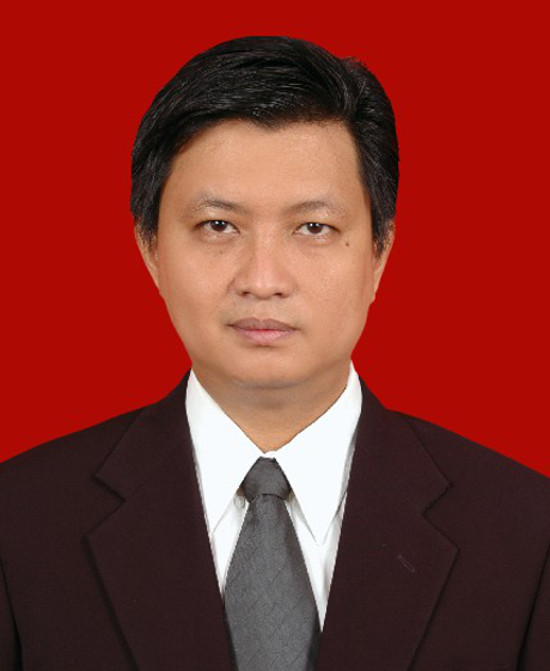
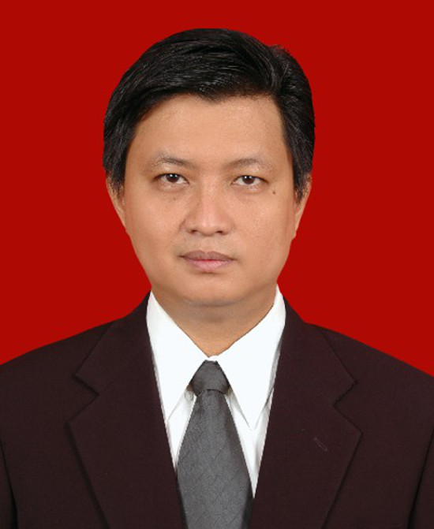

Edufair bukan hal baru bagi Kolese Kanisius. Mampukah penyelenggaraan tahun 2015 ini menawarkan sesuatu yang istimewa, terbedakan dari penyelenggaraan serupa lainnya? Bisakah membangunkan hasrat para pelajar untuk berkobar-kobar melanjutkan pendidikan yang tangguh agar mimpi mereka terwujud?
Sebelas tahun lalu, April 2014, ketika saya memasuki wilayah Jabodetabek, saya membawa dan menggunakan handphone Samsung yang hanya bisa digunakan untuk sms dan menelpon. Sekarang ini, 11 tahun kemudian, saya masih menggunakan handphone Samsung tetapi dengan kualitas yang mengagumkan. Dengan handphone terbaru ini, saya diberi kemungkinan lebih banyak untuk melakukan sesuatu. Sebagai pengguna saya diberi kemudahan luar biasa untuk bekerja karena tersedianya aplikasi yang semakin banyak dan berkembang. Mengapa hal itu bisa terjadi?
Perkembangan gadget dan teknologi informasi luar biasa cepat. Tak terbantahkan! Di balik perkembangan itu pasti ada anak muda yang bisa membuat perbedaan! Penemuan dan lahirnya aplikasi baru pasti berangkat dari imaginasi, kreativitas dan kecerdasan manusia jaman ini. Apa kaitannya dengan Edufair CC 2015?
Edufair bukan sekedar memberi informasi tentang perguruan tinggi. Pertanyaannya: Bisakah Edufair CC mengobarkan hasrat pelajar Jabodetabek untuk belajar lebih tangguh? Bisakah Edufair memperkaya semangat anak muda dan memperluas pengetahuan mereka untuk semakin imaginative dan kreatif sang menggiring pada kemampuan mencipta dan menemukan hal baru yang berguna bagi kehidupan manusia? Penemuan itu tidak terbatas pada teknologi, bisa pada ekonomi dan sosial kemanusiaan.
Maka Edufair akan selalu berguna kalau membantu pelajar mampu membuat keputusan yang baik untuk masa depan mereka. Keputusan itu tampak pada pilihan perguruan tinggi yang dimasukinya. Manakah perguruan tinggi yang memberikan keluangan untuk tumbuhnya kreativitas dan inovasi bagi kehidupan masyarakat yang akan datang? Tidak setiap orang dilahirkan untuk menjadi penemu dan pembaharu kehidupan. Tetapi paling tidak Edufair membantu agar pelajar tidak mengambil keputusan yang keliru demi masa depan mereka.
Terima kasih kepada para pihak yang menjadikan Edufair 2015 ini terwujud: para sponsor, donator, orang tua siswa, panitia, guru – karyawan dan siswa, serta siapa pun yang terlibat di dalamnya. Semoga kerja baik kita ini membantu anak muda meraih mimpi mereka di masa depan.
Salam bahagia. Saat ini generasi pejuang ‘45 tinggal tersisa satu-dua seiring perjalanan waktu. Generasi muda pemilik masa depan sedang mempersiapkan dan memperjuangkan kejayaan Indonesia dan atau kemanusiaan universal. Sebagai wujud cinta tanah air Indonesia, para Kanisian (sebutan bagi para civitas Kolese Kanisius) kelas X dan XII belajar olah rasa, berlatih serius dan mempersembahkan seni tradisi tari Liko Pulo dan Rapai Geleng dari Propinsi Aceh pada acara pembukaan dan penutupan Edufair ’15 SMA Kanisius. Gelaran aksi sosial donor darah bekerja sama dengan PMI (Palang Merah Indonesia) menjadi perwujudan peduli kemanusiaan dari para Kanisian, bapak ibu guru – karyawan, serta orang tua siswa.
Bapak Ignasius Jonan sebagai Menteri Perhubungan era Presiden Jokowi adalah salah satu sosok pemimpin tangguh Indonesia yang berani mewujudkan mimpinya. Beliau berkenan menginspirasi peserta seminar dalam rangkaian edufair tahun ini. Demikian juga nara sumber Bapak Andy F. Noya dan Ibu Prof. Harkristuti Harkrisnowo, MA, P.Hd., presenter perguruan tinggi, program studi, kedutaan negara sahabat yang rela hati berbagi dan menularkan energi positif bagi para siswa baik dari SMA Kanisius maupun SMA sekitar.
Edufair ’15 SMA Kanisius merupakan momentum bagi perguruan tinggi dalam dan luar negeri memperkenalkan diri dan menjangkau calon mahasiswa yang berani bermimpi akan masa depannya. Pengunjung edufair berkesempatan mendapatkan informasi terkait jurusan/program studi, negara sahabat tujuan studi lanjut yang dipresentasikan oleh mereka yang berkompeten. Para sponsor pun berkesempatan mempromosikan produknya kepada ratusan bahkan ribuan orang yang berkunjung.
Harapan panitia bahwa semua pihak yang terlibat, khususnya generasi muda pemberani yang bermimpi untuk meraih masa depan yang gemilang, mendapat manfaat sebesar-besarnya dari event ini. Kami mohon maaf jika dalam penyelenggaraan edufair ’15 terdapat kekeliruan yang kurang berkenan dan perlu diperbaiki di waktu mendatang.
Terima kasih kami atas partisipasi/kerja sama yang baik kepada Bapak Ignasius Jonan, Bapak Andy F. Noya, Ibu Prof. Harkristuti Harkrisnowo, presenter, moderator, juri lomba, pelatih tari, peserta lomba, panitia orang tua, panitia guru-karyawanan-siswa SMA Kanisius, Pengurus Yayasan Budi Siswa, Kepala SMA Kanisius, Kepala SMP Kanisius, komunitas Kolese Kanisius, perguruan tinggi peserta pameran, utusan kedutaan negara sahabat, Kepolisian Sektor Menteng, CYS, PMI, sponsor, donator, dan pihak-pihak yang tidak dapat disebutkan satu per satu. Semoga Tuhan berkenan atas budi baik Anda dan daya upaya kita menjadi berkat bagi sesama. Berkah Dalem Gusti.
Puji syukur kami panjatkan kehadirat Tuhan atas terlaksananya kegiatan rutin tahunan EDUFAIR atau pameran pendidikan yang ke 15 pada tahun 2015 ini yang mengambil tema “BERANI MIMPI RAIH MASA DEPAN GEMILANG”.
Kegiatan EDUFAIR dibuka dengan tarian daerah yang berasal dari ACEH yaitu Tari Rapai Geleng dan Tari Likok Pulo yang dilakukan oleh siswa kelas 10 & 11 juga para guru dan orang tua, ini merupakan wujud nyata dari penerapaan VISI sekolah Kolese Kanisius sebagai sekolah Indonesia yang melestarikan budaya Indonesia.
Pada kegiatan EDUFAIR di tahun ini, Kolese Kanisius yang memiliki MISI 3-C (Competence/Kepandaian, Conscience/Hati Nurani, Compassion/Kepedulian) mengambil terobosan baru yang sangat inovatif, untuk mengajak seluruh siswa (SMA) di Indonesia untuk turut dalam pelaksanaan dari MISI 3-C tersebut, dengan diadakannya kompetisi SCIENCE dan bagi para pemenang tidak hanya menang pada kompetisi ini namun bisa melanjutkan kompetisi ke tingkat selanjutnya (internasional) dan yang pada akhirnya hasil dari lomba tersebut mungkin saja dapat dirasakan oleh masyarakat Indonesia secara langsung.
Dengan hadirnya kompetisi SCIENCE akan menambah lengkap bekal untuk para Canisian yang masih berjuang saat ini dengan tidak hanya mengetahui persis keinginan lanjutan studi yang mereka inginkan dan harapkan (dengan adanya presentasi jurusan dari universitas dari Dalam maupun Luar Negeri) agar mereka dapat menapakkan kaki dengan mantab untuk lebih maju dalam melanjutkan studi dan juga agar para Canisian saat ini dapat menggunakan “Jalan Kesuksesan” yang telah dibuka dan disediakan lebih luas lagi oleh Kolese Kanisius dengan adanya kompetisi SCIENCE sebagai sarana pewujudan tema kali ini “Berani Bermimpi Raih Masa Depan Gemilang”.
Tak lupa juga kami ucapan terima kasih dan selamat kepada segenap pimpiman, Rektor Kolese Kanisius – P. Drs. V. Istanto Pramuja, M.Ed., S.J., Kepala Sekolah SMA – P. Drs. J. Heru Hendarto, M.Ed., S.J, Ketua Panitia Guru – Bapak Agus Jarwanto serta para guru dan karyawan dan para rekan rekan panitia dari orang tua yang sudah meluangkan waktu dan bekerja keras agar kegiatan ini dapat terselenggara dengan baik dan tak lupa pula kami mengucapkan terima kasih kepada para sponsor, donator, siswa dan para pihak yang mendukung kegiatan ini sehingga kegiatan ini dapat terlaksana.
Akhir kata semoga dengan terselenggaranya kegiatan EDUFAIR ke 15 tahun 2015 ini serta kegiatan lainnya akan dapat memberikan manfaat secara langsung khususnya bagi siswa Kolese Kanisius dan masyarakat Indonesia umumnya sehingga menjadikan Kolese Kanisius menjadi pusat keunggulan pelayanan bagi para calon pimpinan beriman.